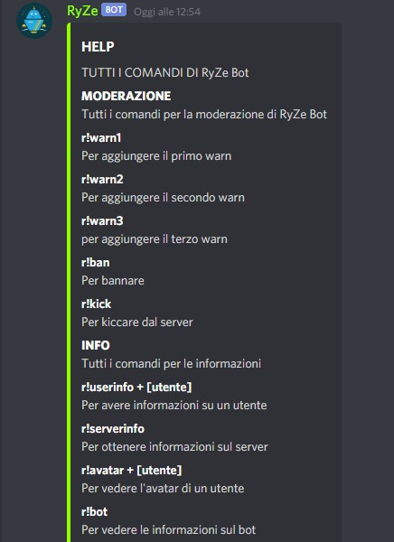

RyZe Bot info
RyZe è un bot in continuo aggiornamento munito di molte funzionalità per diversi utilizzi: ci sono funzionalità per la moderazione, fun, info e molto altro... Lo sviluppatore di RyZe Bot è 🚀| VΣX.єχє#3673 che sta lavorando al progetto da diverso tempo. Qui affianco potete osservare la foto di alcuni comandi che si possono trovare su RyZe Bot
